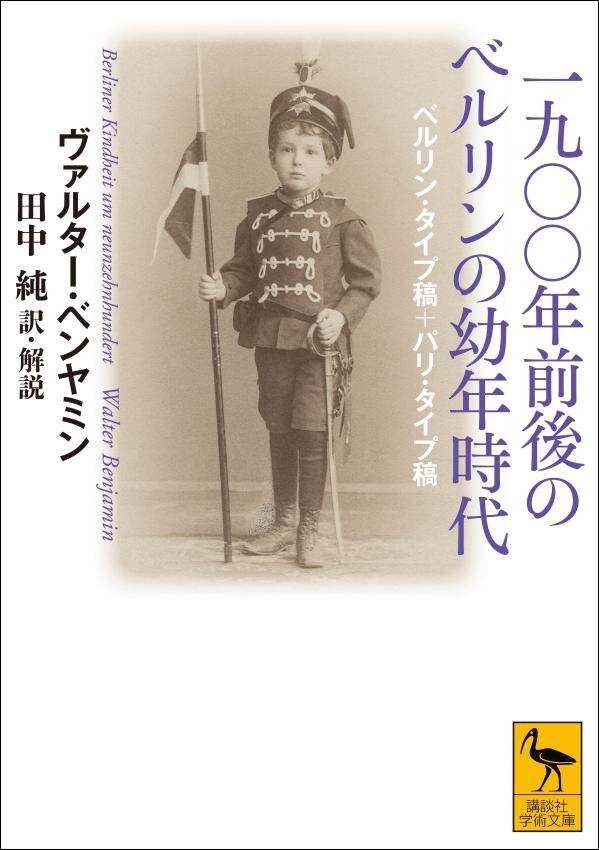

書籍の紹介Über das Buch

ヴァルター・ベンヤミンが、生まれ育ったベルリンの街と幼年時代の記憶を断片的な散文に刻んだ『一九〇〇年前後のベルリンの幼年時代』。年を追って人生を語る自伝とは異なり、子供の目に映った都市の情景や夢想から、その時代の生活と文化を浮かび上がらせます。
生前には刊行されず、改稿が重ねられたこの作品を、ベルリン・タイプ稿（1933年）とパリ・タイプ稿（1938年）の二つのかたちで全訳。章の加除や配列の違いを読み比べながら、凝縮された記憶の世界をたどれます。詳細な訳註と訳者解説を収録。
- 著者ヴァルター・ベンヤミン
- 訳・解説田中純
- 出版社講談社
- シリーズ講談社学術文庫 2883
- 発売日2026年11月12日
- 判型・頁数A6判・640頁
- 定価2,640円（税込）
- ISBN978-4-06-546154-9
書影・書誌情報：講談社の書籍紹介ページ
本書の目次Inhalt
数字は本書の頁を示します。
- 11地図・家系図
一九〇〇年前後のベルリンの幼年時代
ベルリン・タイプ稿（一九三三年） 21
- 23ムンメレーレン
- 41ティーアガルテン
- 64カイザーパノラマ
- 72戦勝記念塔
- 85電話
- 92蝶狩り
- 103旅立ちと帰還
- 114性の目覚め
- 118冬の朝
- 123シュテーグリッツとゲンティーンの角
- 137ヘル・クノッヘ・カビヒトとフロイライン・プーファール
- 148マグデブルク広場の屋内市場
- 153発熱
- 166回転木馬
- 169カワウソ
- 179ある訃報
- 184孔雀島とグリーニケ
- 193ブルーメスホーフ12
- 212字習い箱
- 219戸棚たち
- 229学級文庫
- 237隠れ場所
- 239幽霊
- 243夜会
- 252乞食と娼婦
- 259惨事と犯罪
- 269裁縫箱
- 280クリスマスの天使
- 287二つの金管楽団
- 295せむしのこびと
パリ・タイプ稿（一九三八年） 301
- 302章立て
- 305（序文）
- 311ロッジア
- 320カイザーパノラマ
- 322戦勝記念塔
- 325電話
- 328蝶狩り
- 331ティーアガルテン
- 335遅刻して
- 336男の子の本たち
- 343冬の朝
- 346シュテーグリッツとゲンティーンの角
- 350二つの謎の像
- 353屋内市場
- 355発熱
- 362カワウソ
- 366孔雀島とグリーニケ
- 370ある訃報
- 371ブルーメスホーフ12
- 377冬の夕べ
- 379曲がった通り
- 386靴下
- 388ムンメレーレン
- 391隠れ場所
- 393幽霊
- 396クリスマスの天使
- 399惨事と犯罪
- 404いろいろな色
- 406裁縫箱
- 409月
- 413二つの金管楽団
- 416せむしのこびと
- 419（付録）回転木馬
- 421（付録）性の目覚め
訳者解説 ベンヤミンの見えない都市 423
- 4231 はじめに
- 4252 タイプ稿二種を訳出した理由、および訳註について
- 4333 各章の補説
- 5904 おわりに
「各章の補説」内容：ベルリン・タイプ稿／パリ・タイプ稿／タイプ稿間の章立ての違いについて
- 601書誌
- 621訳者あとがき
- 627ベンヤミン幼少年時代（一八九二―一九一〇年）略年譜
- 635図版一覧
本サイトの内容Rundgang
1
関連地図
本書の舞台となったベルリン旧西区・新西区、ティーアガルテン、ポツダム、ベルリン動物園の同時代地図六点と参考全図一点（1893〜1910年）。拡大縮小しながら、記述の現場を歩くように参照できます。
地図を開く 2図版画像
本書に収録した図版のうち、公開可能なデータのある章について、画像を高解像度で掲載します。ベルリン・タイプ稿とパリ・タイプ稿の訳註・補説、および訳者解説に関連する図版、計54点（ウェブ専用の章構成対照表を含む）。
図版を見る 3関連論文
本書の翻訳と解説の過程で執筆した関連論文・研究ノートの一覧。 公開アクセスのあるものにはリンクを付します。
論文を見る 4関連情報
書評・関連記事、正誤表、リンク集、Zenodo に公開する研究資料への案内など。
情報を見る